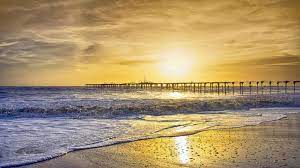
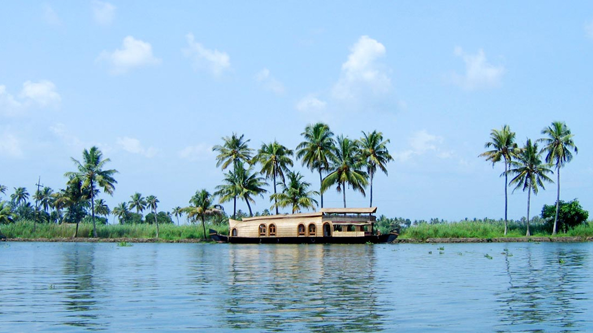

1 / 6

Alappuzha Bypass
2 / 6

light house
3 / 6
.jfif)
alappuzha river
4 / 6
.jfif)
Alappuzha light house
5 / 6

Alapuzha Beach
6 / 6

Vembanad-Lake
Referred to as the Venice of the East, Alappuzha has always enjoyed an important place in the maritime history of Kerala. Today, it is famous for its boat races, backwater holidays, beaches, marine products and coir industry. Alappuzha Beach is a popular picnic spot. The pier, which extends out to the sea here, is over 137 years old. Entertainment facilities at the Vijaya Beach Park add to the attraction of the beach. There is also an old lighthouse nearby which greatly intrigues all visitors.
Another delightful experience while in Alappuzha is the houseboat cruise. The houseboats you find in the backwaters of Alappuzha are in fact a reworked version of the Kettuvallams of olden times. Kettuvallam is a Malayalam word, ‘Kettu’, refers to dwelling structures and ‘Vallom’ means boat. In the olden days, kettuvallam or boat with thatched roof that covers over wooden hulls was used to carry tons of rice and spices.
Of late, houseboats come equipped with all the comforts of a good hotel room including furnished bedrooms, modern toilets, cozy living rooms, a kitchen and even a balcony for angling. An uninterrupted view of life in the backwaters can be enjoyed while staying in a houseboat.
Alappuzha is a Land Mark between the broad Arabian sea and a network of rivers flowing into it.In the early first decade of the 20th Century the then Viceroy of the Indian Empire, Lord Curzon made a visit in the State to Alleppey, now Alappuzha. Fascinated by the Scenic beauty of the place, in joy and amazement, he said, “Here nature has spent up on the land her richest bounties”. In his exhilaration, it is said, he exclaimed, “Alleppey, the Venice of the East”. Thus the sobriquet found its place in the world Tourism Map. The presence of a port and a pier, criss -cross roads and numerous bridges across them, a long and unbroken sea coast might have motivated him to make this comparison.
Alleppey has a wonderful past. Though the present town owes its existence to the sagacious Diwan Rajakesavadas in the second half of 18th century, district of Alappuzha figures in classified Literature. Kuttanad, the rice bowl of Kerala with the unending stretch of paddy fields, small streams and canals with lush green coconut palms , was well known even from the early periods of the Sangam age. History says Alappuzha had trade relations with ancient Greece and Rome in B.C and in the Middle Ages.
Carved out of erstwhile Kottayam and Kollam (Quilon) districts, Alleppey district was formed on 17th of August 1957.
The name of the district Alleppey, the anglicized form was changed as ‘Alappuzha’ as per GO(P) No.133/90/RD dated 7.2.90.It is assumed that the name of Alappuzha was derived by the geographical position and physical features of the place which means “the land between the sea and the network of rivers flowing into it”.
As per GO (MS) No.1026/82/(RD) dated 29.10.1982, Pathanamthitta district was newly constituted taking portions from the then Alappuzha, Kollam and Idukki districts. The area transferred from the erstwhile Alappuzha district to Pathanamthitta district is Thiruvalla taluk as a whole and part of Chengannur and Mavelikkara Taluks. Thus the present Alappuzha district comprises of six taluks namely Cherthala, Ambalappuzha, Kuttanad, Karthikappally, Chengannur and Mavelikkara.